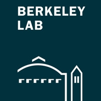
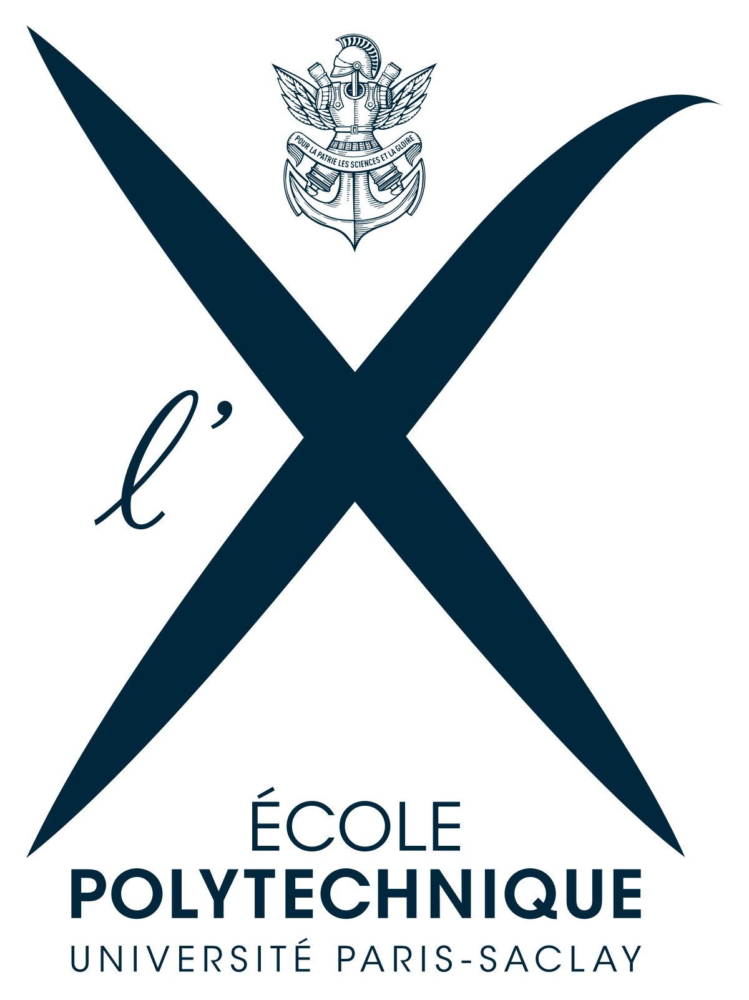
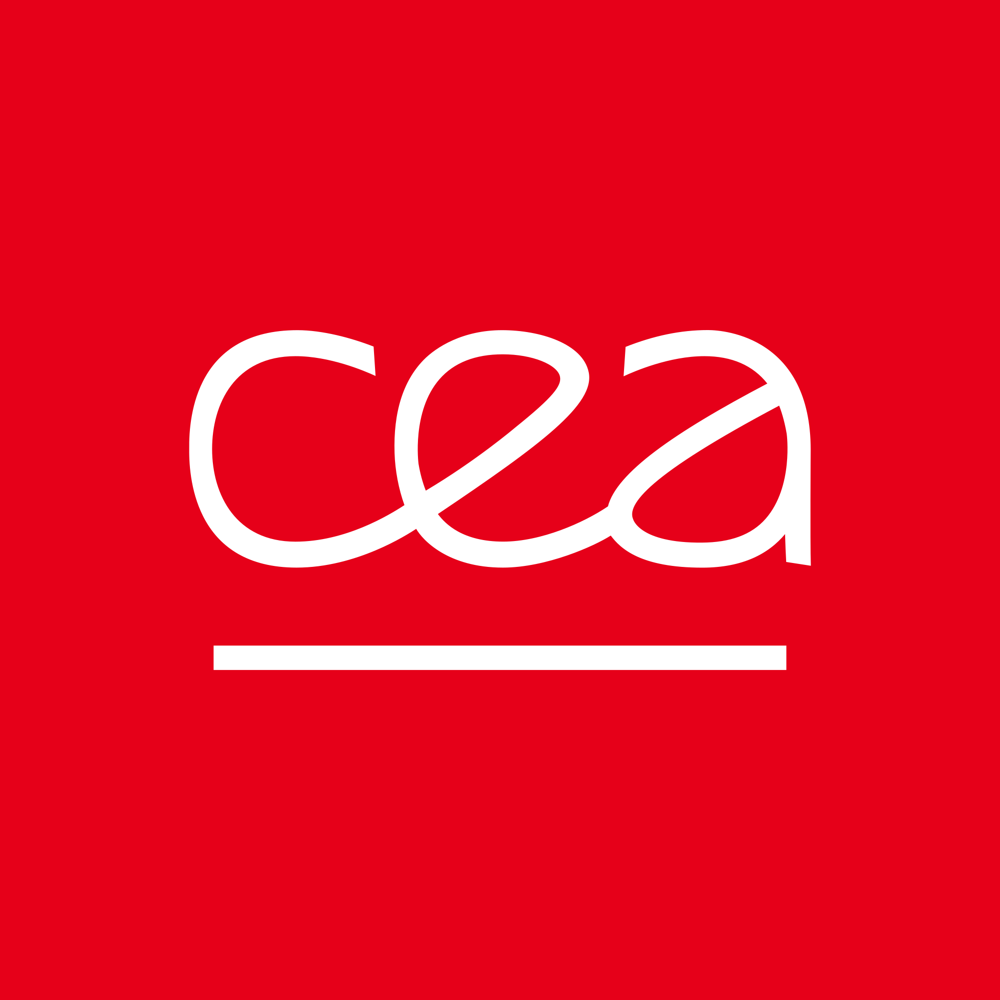

I'm a researcher who has done the full cycle: build the model, prove the science, file the patents, ship the product, and pass regulatory.
Now I’m returning to research with deeper insight, working on foundational models for physiological signals and clinical understanding.
I want to contribute to the future of multimodal, robust, and explainable AI in healthcare.
Background
2020 - 2025
I was the co-founder and Head of Research at Quantiq, an AI healthtech startup building camera-based vital sign monitoring from a simple 30-second selfie (see demo video below).
I developed the first version of our core system, COBOX, which extracts physiological signals like heart rate and breathing rate using computer vision
and remote photoplethysmography (rPPG). I built and led a multidisciplinary research team spanning AI, clinical validation, and regulatory science,
and we designed and executed studies under CE and FDA constraints to take our models from prototype to real-world use. We also created Zenbox, a new kind
of human-AI interaction that adapts to the user’s physiology in real time.
2019 - 2020
Post doc - CNRS.
Study of nonlinear Breit-Wheeler pair creation in external laser fields carrying orbital angular momentum.
Study of nonlinear Breit-Wheeler pair creation in external laser fields carrying orbital angular momentum.
2015 - 2018
My Ph.D. research focused on relativistic and quantum effects in the strong-field regime of laser–plasma interactions.
It was nominated as an outstanding Ph.D. Thesis by Sorbonne Université, Paris.
The jury for my defense was chaired by Jean-Michel Raimond, renowned as the principal collaborator of Serge Haroche, recipient of the 2022 Nobel Prize in Physics.
During my Ph.D., I also collaborated with A. Di Piazza at the Max Planck Institute to investigate first-order QED processes in the ultra-relativistic regime using intense Laguerre–Gaussian light beams.
It was nominated as an outstanding Ph.D. Thesis by Sorbonne Université, Paris.
The jury for my defense was chaired by Jean-Michel Raimond, renowned as the principal collaborator of Serge Haroche, recipient of the 2022 Nobel Prize in Physics.
During my Ph.D., I also collaborated with A. Di Piazza at the Max Planck Institute to investigate first-order QED processes in the ultra-relativistic regime using intense Laguerre–Gaussian light beams.
March 2015 - Sept 2015

MSc thesis - Lawrence Berkeley National Laboratory.
Study of the High Harmonic Generation (HHG) on plasma mirror by Coherent Wake Emission (CWE) and its application to Free Electron laser (X-FEL)
Study of the High Harmonic Generation (HHG) on plasma mirror by Coherent Wake Emission (CWE) and its application to Free Electron laser (X-FEL)
2014 - 2015

MSc Physics - École Polytechnique.
June 2014 - Aug 2014

Research internship - CEA.
Study of a new method for the calculation of the dispersion relation of a multi-species plasma.
Study of a new method for the calculation of the dispersion relation of a multi-species plasma.
2012 - 2015
Engineering degree - Centrale Supelec.
Publications
ESC Congress 2023
Springer 2021
Springer 2021
Springer 2021
Springer 2021
Springer 2021
Springer 2021
Springer 2021
Springer Nature 2021 (Book)
HAL 2018 (PhD Thesis)
IOP 2018
Conference presentations
ESC Congress (Aug 2023)
27th annual international laser physics workshop (July 2018)
Seminar at the Physics department of the University of Pisa (May 2018)
Extremely High-Intensity Laser Physics (ExHILP) conference (Sept2017)
44th European Physical Society Conference on Plasma Physics (June 2017)
Seminar at the Max Planck Institute for Nuclear Physics (Nov 2016)